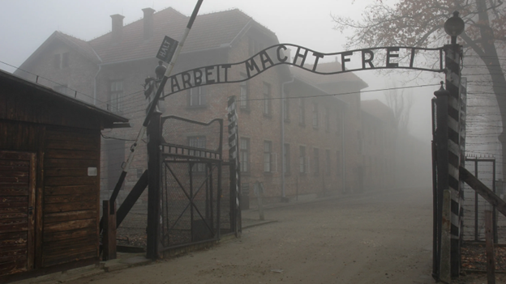

Al Doilea Razboi Mondial a fost un conflict global major care a avut loc intre 1939 si 1945, implicand aproape toate puterile lumii organizate in doua tabere: Puterile Axei (Germania, Italia si Japonia) si Puterile Aliate (Marea Britanie, Uniunea Sovietica, SUA, Franta si mai tarziu China).

Conflictul a avut un impact devastator asupra lumii, cu aproximativ 70 de milioane de oameni morti si cu pierderi enorme de resurse materiale si umane. Holocaustul, masacrul a sase milioane de evrei si alti membri ai grupurilor minoritare, a fost un eveniment unic in istorie si a avut un impact major asupra societatii si politicii mondiale.
Ca si in cazul Primului Razboi Mondial, conflictul a fost generat de rivalitatile economice si politice dintre puterile mondiale, dar si de rasismul si nationalismul promovate de regimurile autoritare ale Puterilor Axei. Razboiul a fost caracterizat de o serie de evenimente majore, cum ar fi invazia Germaniei asupra Poloniei, Batalia de la Stalingrad, invazia Normandiei si lansarea bombelor atomice asupra Japoniei de catre SUA.
Razboiul s-a incheiat in 1945 cu victoria Puterilor Aliate, care au reusit sa distruga fortele Axei si sa puna capat razboiului. Conferinta de la Yalta a condus la crearea Organizatiei Natiunilor Unite si la stabilirea de noi relatii economice si politice la nivel international. Razboiul a dus la o schimbare majora a hartii politice si economice a lumii, cu dezvoltarea Uniunii Sovietice si SUA ca superputeri globale, decolonizarea Africii si Asiei si dezvoltarea unui nou sistem politic si economic global.